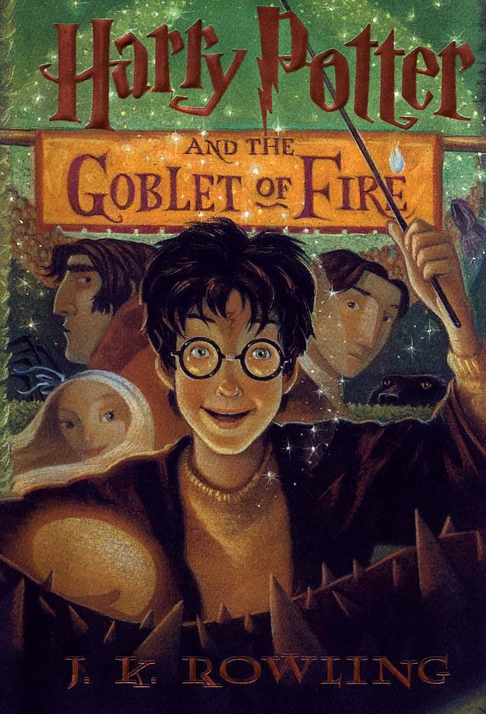

Rp 150.000,-
Harry Potter dan Piala Api adalah buku keempat dalam seri Harry Potter karya J.K. Rowling. Cerita dimulai dengan suasana yang lebih gelap dan menegangkan, menandai perubahan besar dalam dunia sihir. Harry Potter kembali ke Hogwarts dan secara tak terduga terpilih sebagai salah satu peserta Turnamen Triwizard, sebuah kompetisi sihir berbahaya yang seharusnya hanya diikuti oleh penyihir berusia di atas tujuh belas tahun. Bersama para juara dari sekolah sihir lain—Beauxbatons dan Durmstrang—Harry harus menghadapi tiga tantangan mematikan yang menguji kecerdikan, keberanian, dan kesetiaannya. Di tengah tekanan kompetisi, hubungan persahabatan Harry, Ron, dan Hermione diuji, sementara rahasia kelam perlahan terungkap di balik penyelenggaraan turnamen. Puncak cerita membawa Harry pada peristiwa yang mengubah segalanya: kembalinya Lord Voldemort ke wujud fisiknya. Sejak saat itu, dunia sihir tak lagi sama. Buku ini memperlihatkan peralihan dari kisah petualangan anak-anak menuju konflik yang lebih serius, penuh bahaya, dan sarat makna tentang keberanian, pengorbanan, dan kehilangan. Harry Potter dan Piala Api menghadirkan aksi yang intens, emosi yang kuat, serta menjadi titik balik penting dalam keseluruhan seri Harry Potter.

Rp 150.000,-
Harry Potter dan Batu Bertuah adalah novel fantasi karya J.K. Rowling yang menceritakan awal petualangan seorang anak yatim piatu bernama Harry Potter. Sejak kecil, Harry hidup menderita bersama keluarga Dursley yang kejam dan tidak menyukainya. Hidupnya berubah drastis saat ia mengetahui bahwa dirinya adalah seorang penyihir dan diterima bersekolah di Sekolah Sihir Hogwarts. Di Hogwarts, Harry bertemu sahabat-sahabat setianya, Ron Weasley dan Hermione Granger, serta mulai mengenal dunia sihir yang penuh keajaiban, misteri, dan bahaya. Bersamaan dengan itu, Harry perlahan mengungkap rahasia tentang masa lalunya, termasuk hubungannya dengan penyihir jahat Lord Voldemort. Petualangan mereka semakin menegangkan ketika Harry dan teman-temannya berusaha melindungi sebuah benda ajaib bernama Batu Bertuah, yang memiliki kekuatan luar biasa dan menjadi incaran kekuatan gelap. Buku ini menyajikan kisah persahabatan, keberanian, dan pencarian jati diri, dikemas dengan imajinasi yang kaya dan alur yang seru.

Rp 105.000,-
Edensor adalah novel ketiga dalam tetralogi Laskar Pelangi karya Andrea Hirata. Buku ini melanjutkan perjalanan hidup Ikal, yang akhirnya berhasil meraih mimpi besarnya: melanjutkan pendidikan ke luar negeri dengan beasiswa dari Uni Eropa. Berlatar di berbagai negara Eropa, terutama Inggris dan Prancis, Edensor menggambarkan petualangan Ikal bersama sahabatnya, Arai, dalam menghadapi kerasnya hidup sebagai mahasiswa perantauan. Mereka bergulat dengan keterbatasan ekonomi, perbedaan budaya, kesepian, serta tantangan akademik, namun tetap menjalaninya dengan semangat, humor, dan mimpi yang tak pernah padam. Nama Edensor sendiri terinspirasi dari sebuah desa indah di Inggris yang menjadi simbol harapan, cinta, dan tujuan hidup Ikal. Novel ini tidak hanya berkisah tentang perjalanan fisik menjelajah dunia, tetapi juga perjalanan batin dalam menemukan jati diri, makna persahabatan, dan keberanian untuk bermimpi besar. Penuh inspirasi, kehangatan, dan refleksi kehidupan, Edensor mengajarkan bahwa mimpi—seberapapun jauhnya—dapat dicapai dengan ketekunan, keberanian, dan keyakinan pada diri sendiri 🌍📖✨ Saya lebih suka respons ini